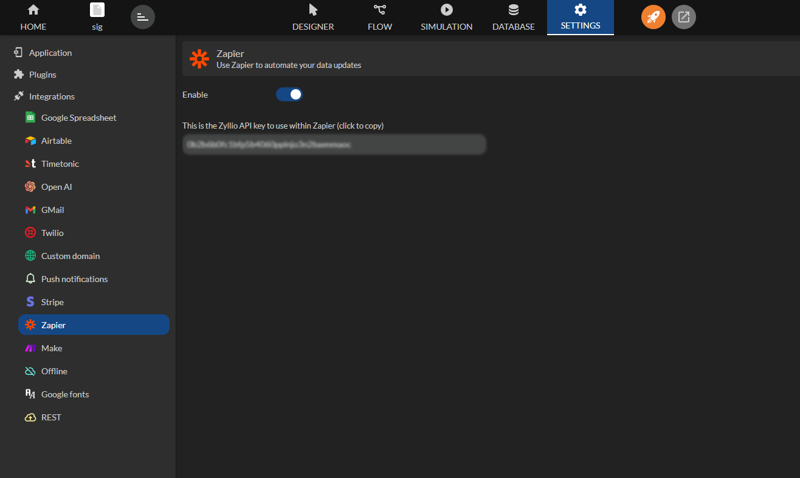
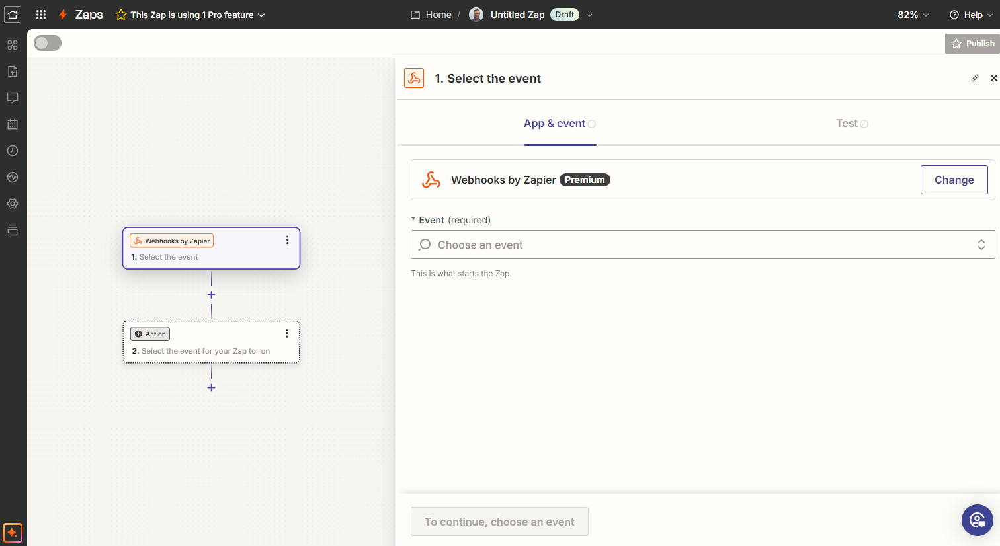
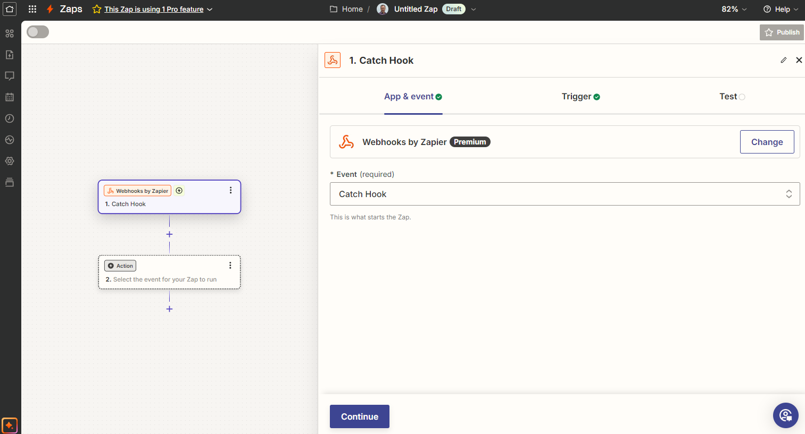
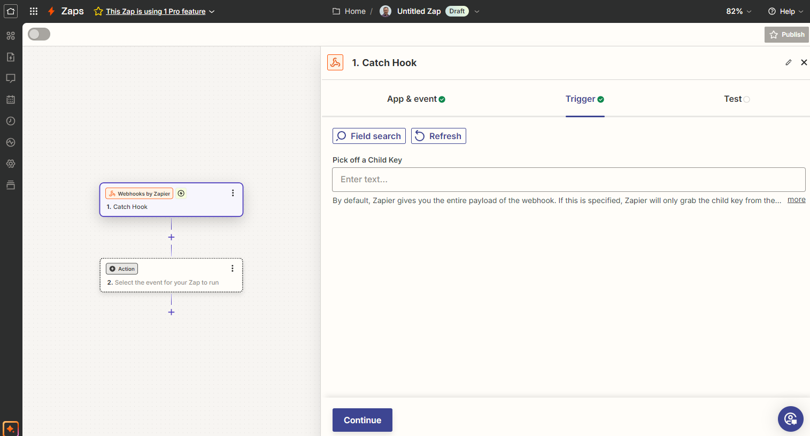
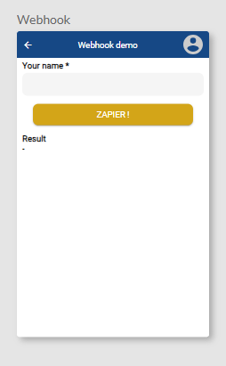
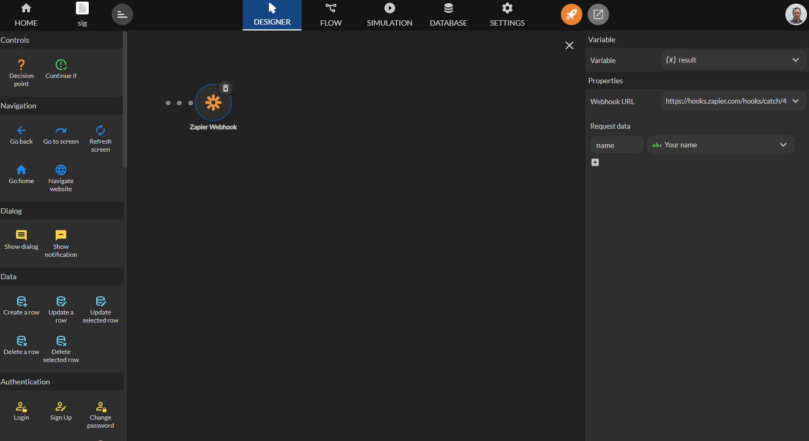

Zapier
Zapier est un outil d'automatisation en ligne qui connecte vos applications et services pour automatiser des taches repetitives sans avoir besoin de coder.
Disponible depuis le plan Enterprise.
Il fonctionne en reliant deux applications ou plus pour creer des automatisations, appelees Scenarios, qui declenchent une action dans une application lorsque quelque chose se produit dans une autre.
Zyllio propose une integration native avec Zapier qui permet :
- de declencher des Zaps depuis Zyllio (via Webhook),
- de mettre a jour des donnees Zyllio depuis des Zaps Zapier.
Prerequis
Un compte Zapier valide est necessaire pour connecter les solutions Zapier et Zyllio.
De plus, un abonnement au plan Zyllio Enterprise est requis pour activer cette fonctionnalite.
Configuration
L'integration de Zapier peut etre activee depuis l'onglet Settings / Integration / Zapier en activant le bouton Enable comme indique sur cette image.

Webhook Zapier
Creation du scenario Zapier
Une fois connecte a Zapier, cliquez sur New Zap pour creez un Zap.

Puis, selectionner Webhooks by Zapier.

Selectionner l'Event: Catch Hook et cliquez sur Continue.

Cliquez a nouveau sur Continue.

L'etape Webhook est donc creee. Cet ecran vous permet de copier l'URL de votre Webhook en cliquant sur le bouton Copy.

Creation de l'ecran
Cet ecran demande le nom de l'utilisateur pour le transmettre a Zapier via le Webhook.
L'ecran comprend :
- Un champ de saisie Text dont la variable s'appelle Your name.
- Un bouton qui declenche le Webhook Zapier via une action.
- Un composant LabelText qui affiche la reponse du Webhook stockee dans la variable Result.

Creation de l'action
Selectionnez le bouton puis cliquez sur sa propriete Action. Cliquez deposez l'action Zapier Webhook puis configurez l'action comme suit :
- La propriete Variable definie a Result.
- La propriete Webhook URL definie a l'URL de votre Webhook copiee depuis votre Zap.
- La propriete Request data contient une donnee appelee name qui fait reference a la variable Your name.
Ainsi, le Webhook Zapier recevra en parametre le nom de l'utilisateur saisi dans l'ecran Zyllio.

Ensuite cliquez sur le bouton Zapier ! pour declencher votre Webhook.
Tester le Webhook
Retournez dans le Zap, et cliquez sur l'onglet Test et cliquez sur le bouton Test trigger.
Puis selectionner Continue with selected record qui devrait afficher les parametres envoyes par l'ecran Zyllio: Name Paul.

Le Zap est maintenant connecte a Zyllio, d'autres etapes (Steps) peuvent etre ajoutes (Mail, Notion, Slack, ...).